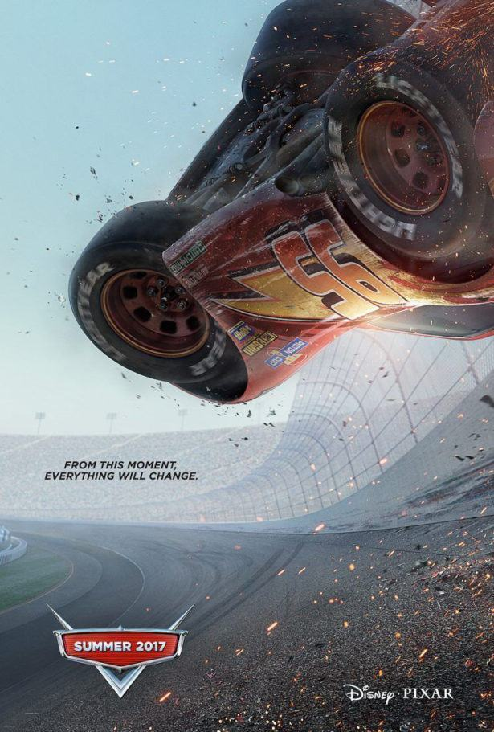
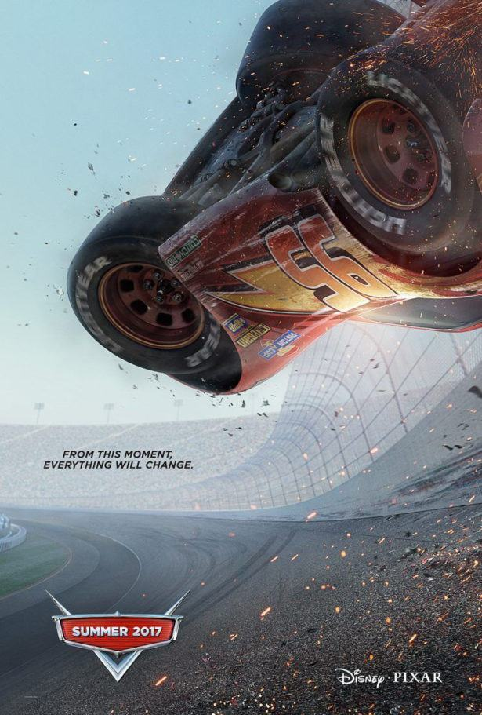
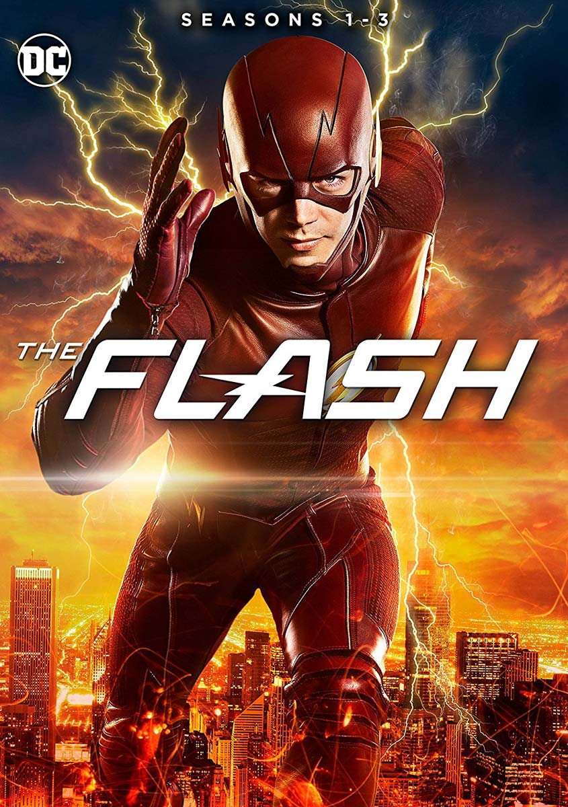
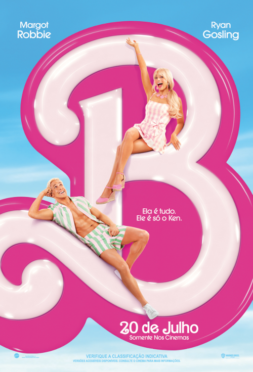

Melhores filmes do momento


 

Velozes e Furiosos 10

SINOPSE: No décimo filme da série Velozes e Furiosos e último da nova trilogia (Velozes 8, 9 e 10), ao longo de muitas missões e contra probabilidades que pareciam impossíveis, Dom Toretto (Vin Diesel) e sua família foram mais espertos e superaram todos os inimigos em seu caminho. Agora, eles devem desafiar o adversário mais letal que já enfrentaram. Alimentada pela vingança, uma ameaça terrível emerge das sombras do passado na forma de Dante (Jason Momoa), para destruir o mundo de Toretto e destruir tudo - e todos - que ele ama. Ele então, comandando novamente a equipe de corredores mais conhecida do mundo, encara mais uma difícil missão sobre quatro rodas. O fim da estrada começa e Velozes & Furiosos 10 lança os capítulos finais de uma das franquias globais mais famosas e populares do cinema, agora em sua terceira década e ainda forte com o mesmo elenco e personagens centrais de quando começou.
The Flash
SINOPSE: The Flash é o filme solo do herói estrelado pelo ator Ezra Miller. Todo mundo já pensou em voltar no tempo para mudar alguma coisa que incomodou a vida, é por isso que Flash decide fazer o mesmo. Depois dos eventos de Liga da Justiça, Barry Allen decide viajar no tempo para evitar o assassinato de sua mãe, pelo qual seu pai foi injustamente condenado à cadeia. O que ele não imaginava seria que sua atitude teria consequências catastróficas para o universo. Ao voltar no tempo, Allen se vê em um efeito borboleta e começa a viajar entre mundos diferentes do seu. Para voltar para seu plano original, Flash contará com a ajuda de versões de heróis que já conheceu, incluindo versões do Batman que já são conhecidas (Michael Keaton e Ben Affleck), para evitar mais quebras entre universos e voltar ao normal. Baseado livremente na HQ "Flashpoint".
Barbie
SINOPSE: No fabuloso live-action da boneca mais famosa do mundo, acompanhamos o dia a dia em Barbieland - o mundo mágico das Barbies, onde todas as versões da boneca vivem em completa harmonia e suas únicas preocupações são encontrar as melhores roupas para passear com as amigas e curtir intermináveis festas. Porém, uma das bonecas (interpretada por Margot Robbie) começa a perceber que talvez sua vida não seja tão perfeita assim, questionando-se sobre o sentido de sua existência e alarmando suas companheiras. Logo, sua vida no mundo cor-de-rosa começa a mudar e, eventualmente, ela sai de Barbieland. Forçada a viver no mundo real, Barbie precisa lutar com as dificuldades de não ser mais apenas uma boneca - pelo menos ela está acompanhada de seu fiel e amado Ken (Ryan Gosling), que parece cada vez mais fascinado pela vida no novo mundo. Enquanto isso, Barbie tem dificuldades para se ajustar, e precisa enfrentar vários momentos nada coloridos até descobrir que a verdadeira beleza está no interior de cada um
| Cinemas na região | ||||||
|---|---|---|---|---|---|---|
| Cinema | Cidade | Horário de funcionamento | ||||
| Movie Arte Cinemas | Nova Prata RS | 13h às 21h | ||||
| Movie Arte Cinemas | Bento Gonçalves RS | 13h às 21h | ||||
| Cinépolis São Pelegrino | Caxias do Sul RS | 13:30h às 22:45h | ||||